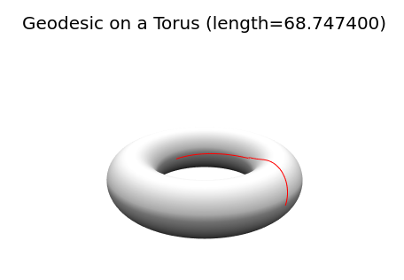

Calculus of Variations
The Brachistochrone over a Tore
In this example, we present how to model the classical brachistochrone problem [1] over the torus with PDENLPModels.jl in polar coordinates. We want to model the following problem:
\[\left\lbrace \begin{aligned} \min_{\varphi, \theta} \ & \ \int_0^1 a^2 \dot{\varphi}^2 + (c + a \cos(\varphi))^2 \dot{\theta}^2dt,\\ & \ 0 \leq \theta, \varphi \leq 2\pi,\\ & \ \varphi(0)= 0, \varphi(1)= \pi,\\ & \ \theta(0) = 0, \theta(1) = \pi,\\ \end{aligned} \right.\]
with $a=1$ and $c=3$. We also refer to [2] for the analytical solutions of this problem.
using Gridap, PDENLPModels
n = 100 #discretization size
domain = (0,1)
model = CartesianDiscreteModel(domain, n)
labels = get_face_labeling(model)
add_tag_from_tags!(labels,"diri1",[2])
add_tag_from_tags!(labels,"diri0",[1])
x0 = zeros(2) # initial values
xf = π * ones(2) # final values
order = 1
valuetype = Float64
reffe = ReferenceFE(lagrangian, valuetype, order)
V0 = TestFESpace(
model,
reffe;
conformity = :H1,
dirichlet_tags=["diri0","diri1"],
)
V1 = TestFESpace(
model,
reffe;
conformity = :H1,
dirichlet_tags=["diri0","diri1"],
)
U0 = TrialFESpace(V0, [x0[1], xf[1]])
U1 = TrialFESpace(V0, [x0[2], xf[2]])
V = MultiFieldFESpace([V0, V1])
U = MultiFieldFESpace([U0, U1])
nU0 = Gridap.FESpaces.num_free_dofs(U0)
nU1 = Gridap.FESpaces.num_free_dofs(U1)
trian = Triangulation(model)
degree = 1
dΩ = Measure(trian, degree)
# The function under the integral:
# To use the function cos in Gridap: `operate(cos, x)` vaut cos(x)
# The square function is not available, so: `x*x` holds for $x^2$,
# and `∇(φ) ⊙ ∇(φ)` for `φ'^2`.
a = 1
c = 3
function f(x)
φ, θ = x
∫(a * a * ∇(φ) ⊙ ∇(φ) + (c + a * (cos ∘ φ)) * (c + a * (cos ∘ φ)) * ∇(θ) ⊙ ∇(θ))dΩ
end
# boundaries
xmin = 0
xmax = 2*π
nlp = GridapPDENLPModel(
zeros(nU0 + nU1),
f,
trian,
U,
V,
lvar = xmin * ones(nU0+nU1),
uvar = xmax * ones(nU0+nU1),
)Then, one can solve the problem with Ipopt via NLPModelsIpopt.jl and plot the solution.
using NLPModelsIpopt
stats = ipopt(nlp, print_level = 0)
nn = Int(nlp.pdemeta.nvar_pde/2)
φs = stats.solution[1:nn]
θs = stats.solution[nn+1:2*nn]
xs = (c .+ a * cos.(φs)) .* cos.(θs)
ys = (c .+ a * cos.(φs)) .* sin.(θs)
zs = a * sin.(φs)
L = stats.objective
plotlyjs()
linspace(from, to, npoints) = range(from, stop=to, length=npoints)
#plot a torus
M = 100
αs = linspace(0, 2π, M)
βs = linspace(0, 2π, M)
Xs = (c .+ a * cos.(αs)) * cos.(βs)'
Ys = (c .+ a * cos.(αs)) * sin.(βs)'
Zs = (a * sin.(αs)) * ones(M)'
plot3d(Xs, Ys, Zs, st=:surface, grid=false, c=:grays, axis=false, colorbar=false)
plot3d!(xs, ys, zs, linewidth=4, color=:red, title=@sprintf("Geodesic on a Torus (length=%4.f)", L), legend=false)
References
[1] Weisstein, Eric W. Brachistochrone Problem. From MathWorld–A Wolfram Web Resource. mathworld.wolfram.com/BrachistochroneProblem.html
[2] Mark L. Irons The Curvature and Geodesics of the Torus (2005). torus.geodesics.pdf